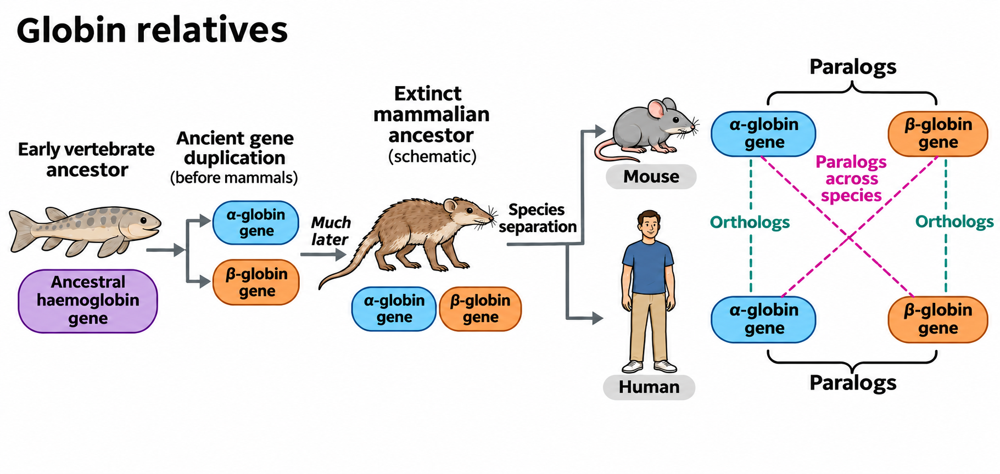
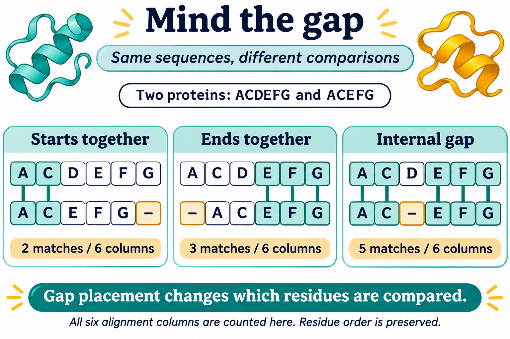
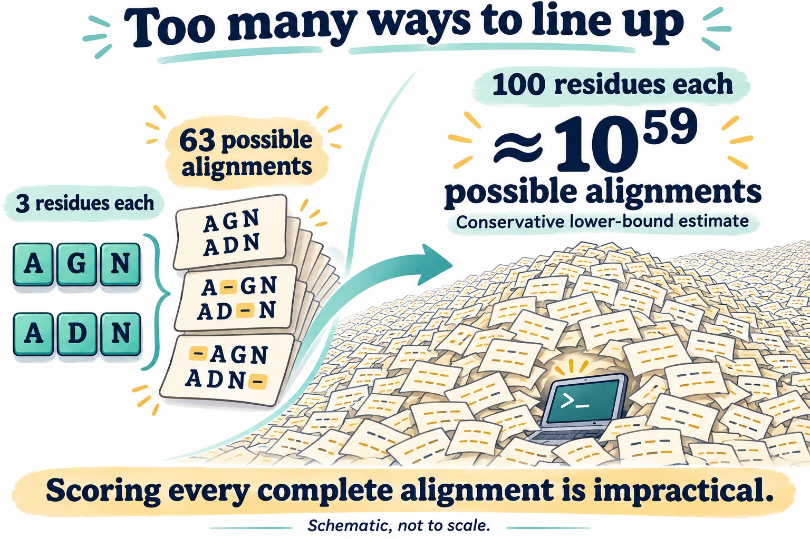
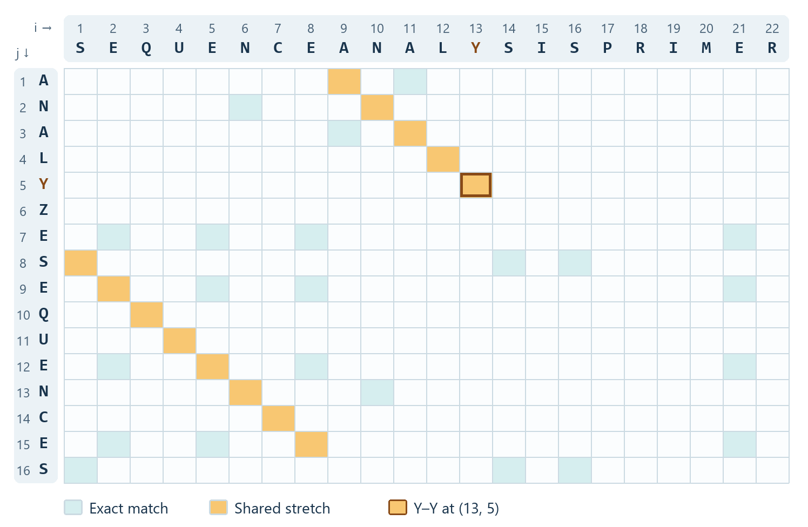
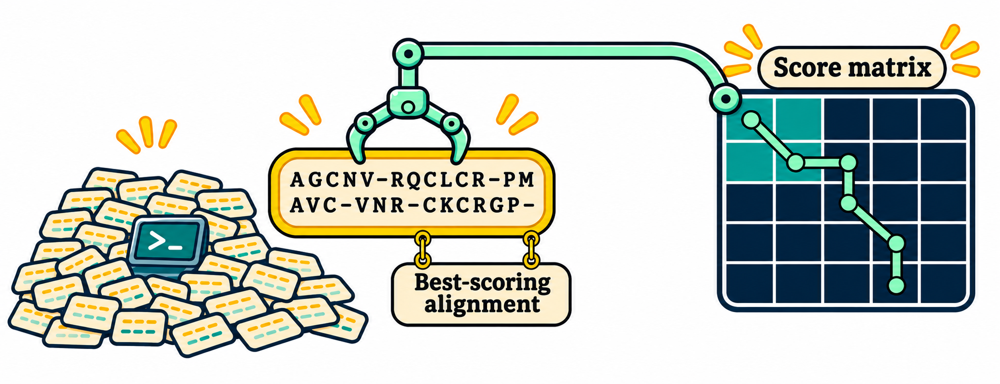
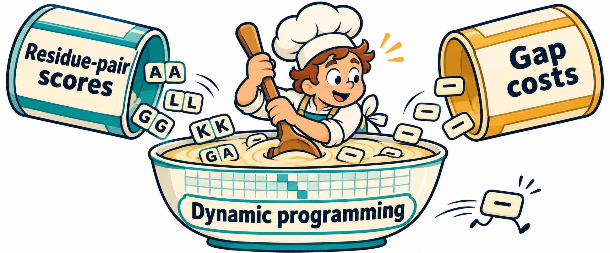
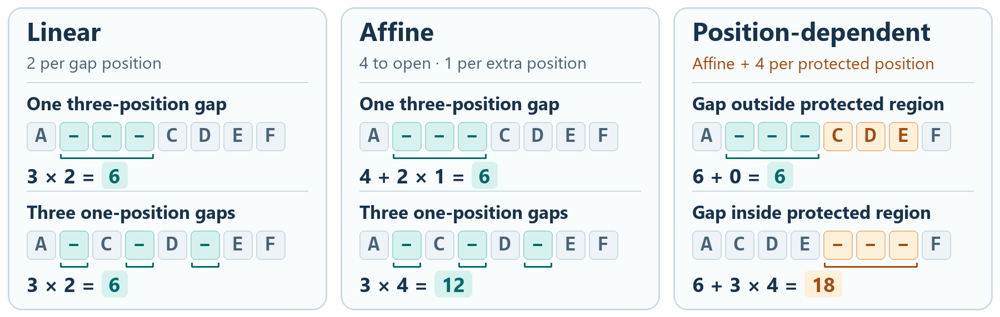
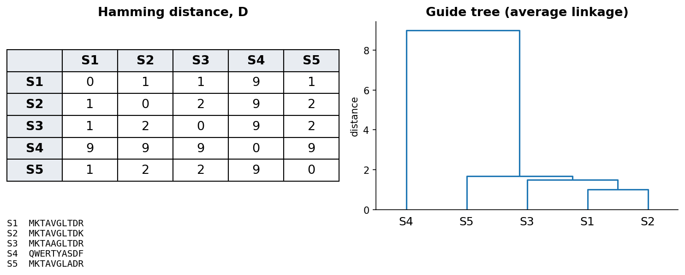
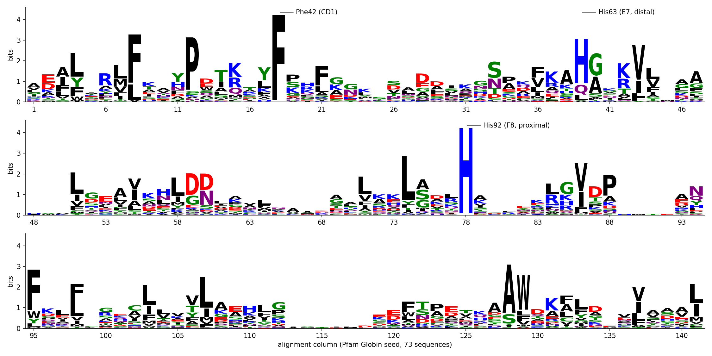
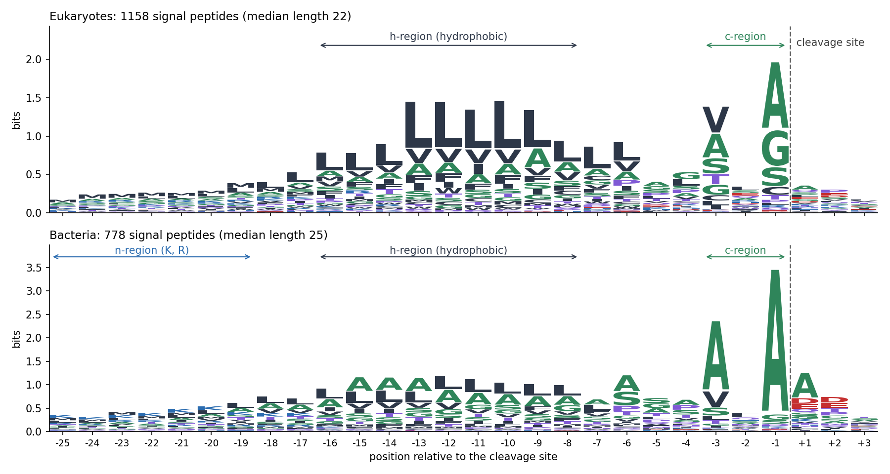

4 Session 4: Sequence Alignment
Notebook: Session 4 — Sequence Alignment in code — the code behind this page. Download it to run it yourself.
Lecture video: the slides read aloud, with captions — block 1 (20 min) · block 2 (15 min) · block 3 (21 min).
The worked examples in this chapter use illustrative protein sequences and scoring rules. The accompanying lecture explores them in more detail. Dayhoff, Schwartz & Orcutt (1978), Atlas of Protein Sequence and Structure, pp. 345–352, introduced the PAM matrices. Henikoff & Henikoff (1992), PNAS 89:10915–10919, introduced the BLOSUM matrices. Other background sources include Wikipedia’s Gap penalty, Standard score, Kullback–Leibler divergence, Sequence homology, Point accepted mutation, BLOSUM, Multiple sequence alignment — CC BY-SA 4.0; the notebook’s core algorithm code is adapted from Lukas Käll’s bibook — CC BY 4.0. The guide-tree worked-example figure was drawn for this book. The globin sequence logo is drawn for this book from the Pfam Globin family (PF00042) seed alignment, via InterPro (CC0), with logomaker; sequence logos were introduced by Schneider & Stephens (1990), Nucleic Acids Research 18:6097-6100; Wikipedia, Sequence logo — CC BY-SA 4.0.
Globin-relationship illustration. The cartoon in Figure 4.2 is an AI-generated course schematic of selected globin lineages. The ancestral animals are illustrative, rather than reconstructions of identified fossils. It shows selected globin lineages and omits additional genes, later duplications and intermediate animal lineages. The ancient origin of the alpha- and beta-globin lineages follows a review of globin evolution; the basic relationships are explained in the NCBI/NLM tutorial.
Alignment illustrations. The diagrams in Figure 4.3 and Figure 4.4 are AI-generated educational schematics. The avalanche illustrates the growth in possible arrangements. The horizontal illustration in Figure 4.6 is AI-generated. The gap-cost comparison in Figure 4.8 was drawn for this book using illustrative costs. The dot plot in Figure 4.5 was drawn from the two example strings using exact letter matches. The cooking illustration in Figure 4.7 was generated with ImageGen.
4.1 Learning goals
Session 3 showed how to find DNA, RNA and protein sequences, identify what each record represents, and check its organism, version and supporting evidence. We now ask how to compare the sequences we retrieve. How similar are two proteins, and what can that similarity tell us about their evolutionary relationship? Answering requires deciding which residues to compare. Session 4 develops sequence alignment as a way to establish this correspondence, first between two sequences and then among several. By the end of this session you should be able to:
- explain homology, orthologs and paralogs, distinguish ancestry from sequence identity and similarity, and explain why comparing sequences requires alignment; construct simple global and local alignments using the Needleman–Wunsch and Smith–Waterman algorithms;
- explain how substitution scores and linear or affine gap penalties affect an alignment, describe the main steps in deriving PAM and BLOSUM matrices, and compare their assumptions, numbering and use;
- describe progressive multiple sequence alignment and the role of its guide tree, compare iterative and consistency-based approaches, and interpret conserved and variable positions using column entropy and sequence logos.
4.2 Sequences make sense together
4.2.1 Why compare sequences?
In Session 3, we learned how to retrieve DNA, RNA and protein sequences. Retrieving a sequence gives us a starting point for a biological investigation. Suppose we obtain a protein sequence from a newly sequenced animal. We want to know whether it resembles beta-globin, myoglobin or another protein, which parts have remained conserved, and what its differences might mean.
For these questions, sequence comparison is indispensable. Comparing an unfamiliar sequence with sequences already studied connects it to existing knowledge about protein structure, function and evolution. It helps us move from a string of letters to biological hypotheses that we can investigate. Pearson, PMC open-access article.
Comparing several relatives provides another perspective. Some positions may have changed repeatedly, while others have remained almost unchanged. These conserved positions can help us identify regions important for a protein’s activity or stability and guide experiments investigating the consequences of a sequence change. Pearson, PMC open-access article.
4.2.2 Two ways to become relatives
The human beta-globin gene has relatives both within our genome and in other species. To understand these relationships, we need to trace their origins. Genes can be copied, and species can split. These two events give rise to different relationships between the genes we find today.
Paralogs descend from different copies produced by gene duplication. The alpha- and beta-globin lineages arose this way from an ancestral haemoglobin gene, long before mammals evolved. The copies can subsequently retain similar roles or develop different properties. Human alpha-globin genes and the beta-globin gene HBB are therefore paralogs. Globin evolution.
Orthologs descend from a corresponding ancestral gene after species separation. The matching alpha-globin genes illustrated for mouse and human are orthologs, as are the matching beta-globin genes. Both species inherited these lineages from their common ancestor. NCBI/NLM tutorial.
These terms describe relationships between pairs of genes. Any alpha-beta pair is paralogous, whether the genes occur in the same species or different species. Thus mouse alpha-globin and human beta-globin, and human alpha-globin and mouse beta-globin, are both paralogous pairs: their histories trace back to the earlier duplication, not the later species separation. Figure 4.2 illustrates these relationships for selected globin lineages.

4.3 Too many ways to line up
4.3.1 Which residue goes where?
Counting matches is straightforward once we know which residues correspond. Human and sperm whale myoglobins provide a simple starting example: two sequences of the same length placed beneath one another. Equal length alone, however, does not establish correspondence.
Insertions and deletions make the comparison more demanding. Introducing gaps produces aligned rows of equal length while preserving residue order. Gap placement changes which residues face one another, so the identity and similarity we measure depend on the proposed alignment.

4.3.2 Best according to which score?
An alignment is a hypothesis about residue correspondence. We compare candidates using an alignment score that combines contributions from aligned residue pairs with penalties for gaps. The aim is to find a highest-scoring alignment under the chosen scheme. This optimum does not by itself establish the true evolutionary history.
4.3.3 63 is only the beginning
Could we score every candidate and keep the best? Even AGN and ADN, with just three residues each, have 63 possible gap-placement arrangements when residue order is preserved and columns containing two gaps are excluded.
For two sequences of 100 residues each, a conservative lower-bound estimate is already about \(10^{59}\) possible alignments. Exhaustively scoring them is impractical.

We therefore need specialised alignment algorithms that find a best-scoring alignment efficiently. The next section shows how these algorithms reuse work across many candidates.
Further reading
- Jeffrey R. Chasnov, Sequence alignment by brute force, Mathematical Biology, Section 7.2, pp. 102–103, explains how the number of possible alignments grows and why exhaustive search becomes impractical. The mathematical derivation is optional.
4.4 Dynamic programming
We just saw how quickly the pile of possible alignments grows. So how do we find the highest-scoring alignment in that pile?
The simplest way to see where two sequences might align is a dot plot. It marks matching residues on a grid, where runs of matches stand out as diagonals. The optional reading Two diagonals in a dot plot shows how to read these patterns.
Put SEQUENCEANALYSISPRIMER across the top and ANALYZESEQUENCES down the left. Each square compares a pair of letters. Mark it when the letters match. For example, the cell at column 13, row 5 compares Y with Y.

The five consecutive matches in ANALY and the eight in SEQUENCE make two clear diagonals. Other shaded cells mark individual matches. This is how a dot plot makes shared stretches easy to spot.
Erik L. L. Sonnhammer and Richard Durbin’s DOTTER paper describes a dot-plot tool that can help distinguish stretches of similarity from isolated matches.
The main method we’ll use here is dynamic programming. It fills the score matrix one cell at a time, using the best scores from previously filled neighbouring cells. This lets us efficiently fish an optimal alignment out of the pile, one with the highest score under the rules we chose.
Dynamic programming was formalised in the early 1950s by mathematician Richard Bellman, who was working at RAND Corporation on optimal decision processes. In his autobiography, he recalled wanting to concoct an impressive name that would shield his work from US Secretary of Defense Charles Wilson, whom he remembered as hostile to mathematical research. His work involved decisions that changed over time and planning, hence dynamic and programming. Here programming meant planning decisions. Bellman especially liked dynamic because “it’s impossible to use the word dynamic in a pejorative sense”. He figured dynamic programming was “something not even a Congressman could object to”.
Bellman’s 1952 paper introduces the method. The story is from his autobiography, quoted in Stuart Dreyfus’s account.

First, decide how much of the two sequences you want to align. A global alignment includes both sequences from end to end. A local alignment finds the best-scoring pair of stretches within them.
Two flavours of dynamic programming have been developed for these tasks. Needleman–Wunsch finds a global alignment, and Smith–Waterman finds a local alignment. Let’s look at how each works.
4.4.1 End to end with Needleman–Wunsch
How do two sequences line up from first residue to last? The Needleman–Wunsch algorithm finds a highest-scoring global alignment. Every residue appears in the result, paired with another residue or with a gap. Global alignment is useful when we expect correspondence along most of both sequences, as with the two myoglobins introduced earlier.
4.4.1.1 Fill the grid one cell at a time
Put sequence \(x\) across the columns and sequence \(y\) down the rows. Cell \(V(i,j)\) holds the best score for aligning the first \(i\) residues of \(x\) with the first \(j\) residues of \(y\). The origin scores zero because both prefixes are empty. Along the top row and left column, each new residue sits opposite a gap. Subtract the gap cost at each step along these boundaries.
For every interior cell, compare three extensions. A diagonal step pairs two residues. A step from the left takes a residue from \(x\) and places a gap in \(y\). A step from above takes a residue from \(y\) and places a gap in \(x\). With a residue-pair score \(s\) and a positive cost \(g\) per gap position, use the largest of these three totals.
\[ V(i,j)=\max\left\{ \begin{aligned} & V(i-1,j-1)+s(x_i,y_j),\\ & V(i-1,j)-g,\\ & V(i,j-1)-g. \end{aligned} \right. \]
For two sequences of 100 residues each, the algorithm fills 10,000 interior cells, each with three candidates. The grid lets us reuse a score wherever the same pair of prefixes occurs.
4.4.1.2 Read the alignment backward
As we fill each cell, we remember which of the three neighbouring cells gives the highest total after adding the residue-pair score or subtracting the gap cost. We draw an arrow from that predecessor into the cell we just filled. If several choices tie for the highest score, we keep all their arrows.
To reconstruct a global alignment, start at the bottom right and follow those arrows backward to the origin. Each step adds a column to the left of the columns already recovered.
Further reading
- Saul B. Needleman and Christian D. Wunsch, A general method applicable to the search for similarities in the amino acid sequence of two proteins, Journal of Molecular Biology (1970), introduces the matrix method for comparing protein sequences.
4.4.2 Find the best stretch with Smith–Waterman
Two larger proteins may share one domain. The Smith–Waterman algorithm finds a highest-scoring local alignment of the stretches that correspond best under the chosen scores. Leading and trailing residues can fall outside the alignment. Gaps within the aligned stretch still carry their cost.
4.4.2.1 Give the score a fresh start
Set the top row and left column to zero, so \(V_{\mathrm{SW}}(i,0)=V_{\mathrm{SW}}(0,j)=0\). Fill each interior cell with the same three extensions as before, adding zero as a fourth candidate. Here \(s(x_i,y_j)\) scores the residue pair and \(g\) is the positive cost of a gap position.
\[ V_{\mathrm{SW}}(i,j)=\max\left\{ \begin{aligned} & V_{\mathrm{SW}}(i-1,j-1)+s(x_i,y_j),\\ & V_{\mathrm{SW}}(i-1,j)-g,\\ & V_{\mathrm{SW}}(i,j-1)-g,\\ & 0. \end{aligned} \right. \]
When the extensions give no positive score, a zero allows a new alignment to begin from that point.
4.4.2.2 Start at the peak, stop at zero
At the end of the fill, start at the highest score anywhere in the matrix. Follow the stored arrows backward to the first zero. A step that gives zero can leave an incoming arrow in that cell. The traceback ends at the zero even when such arrows are visible.
Further reading
- Temple F. Smith and Michael S. Waterman, Identification of common molecular subsequences, Journal of Molecular Biology (1981), sets out the local alignment recurrence and its traceback rule.
4.4.3 A worked example
Use the same two protein sequences in both algorithms. Put AGCNVRQCLCRPM across the columns and AVCVNRCKCRGP down the rows.
We’ll use an artificial scoring scheme. Each exact match earns 2 points. Pairing A with G scores 0, pairing V with G costs 2 points, and every other mismatch costs 1 point. Each gap position costs 1 point.
Choose an Algorithm, then select Fill matrix or Traceback from View. In traceback, follow the arrows backward. At a tie, choose a Tied predecessor. The arrows you follow become darker, and the recovered alignment columns appear below the grid.
| 0 | A | G | C | N | V | R | Q | C | L | C | R | P | M | |
|---|---|---|---|---|---|---|---|---|---|---|---|---|---|---|
| 0 | 0 | -1 | -2 | -3 | -4 | -5 | -6 | -7 | -8 | -9 | -10 | -11 | -12 | -13 |
| A | -1 | 2 | 1 | 0 | -1 | -2 | -3 | -4 | -5 | -6 | -7 | -8 | -9 | -10 |
| V | -2 | 1 | 0 | 0 | -1 | 1 | 0 | -1 | -2 | -3 | -4 | -5 | -6 | -7 |
| C | -3 | 0 | 0 | 2 | 1 | 0 | 0 | -1 | 1 | 0 | -1 | -2 | -3 | -4 |
| V | -4 | -1 | -1 | 1 | 1 | 3 | 2 | 1 | 0 | 0 | -1 | -2 | -3 | -4 |
| N | -5 | -2 | -2 | 0 | 3 | 2 | 2 | 1 | 0 | -1 | -1 | -2 | -3 | -4 |
| R | -6 | -3 | -3 | -1 | 2 | 2 | 4 | 3 | 2 | 1 | 0 | 1 | 0 | -1 |
| C | -7 | -4 | -4 | -1 | 1 | 1 | 3 | 3 | 5 | 4 | 3 | 2 | 1 | 0 |
| K | -8 | -5 | -5 | -2 | 0 | 0 | 2 | 2 | 4 | 4 | 3 | 2 | 1 | 0 |
| C | -9 | -6 | -6 | -3 | -1 | -1 | 1 | 1 | 4 | 3 | 6 | 5 | 4 | 3 |
| R | -10 | -7 | -7 | -4 | -2 | -2 | 1 | 0 | 3 | 3 | 5 | 8 | 7 | 6 |
| G | -11 | -8 | -5 | -5 | -3 | -3 | 0 | 0 | 2 | 2 | 4 | 7 | 7 | 6 |
| P | -12 | -9 | -6 | -6 | -4 | -4 | -1 | -1 | 1 | 1 | 3 | 6 | 9 | 8 |
Needleman–Wunsch. The bottom-right cell at column 13, row 12 scores 8. Traceback first moves left, pairing the final M with a gap, then diagonally, pairing P with P. Following the stored arrows to the origin gives this optimal global alignment.
x AGCNV-RQCLCR-PM
y AVC-VNR-CKCRGP-At column 5, row 5, the predecessors above and to the left both have score 3. Either gives 2 after the gap cost. The route above pairs V with V in this stretch. The route to the left pairs N with N there and yields another global alignment with score 8.
Smith–Waterman. The highest score is 9 at column 12, row 12. Traceback starts with P paired with P and stops at the first zero, at column 2, row 2. The last backward step recovers the first C–C pair. This gives one optimal local alignment.
x CNV-RQCLCR-P
y C-VNR-CKCRGPThe first two residues of each sequence and the final M of \(x\) lie outside the local alignment.
4.4.4 What is needed to align?
The algorithms used two ingredients. A residue-pair score tells us what to add when two residues share an alignment column. A gap cost tells us what to subtract when a column pairs a residue with a gap.

4.4.4.1 Score a pair of residues
A substitution matrix is a lookup table for the scores of all residue pairs in a given scoring scheme. A simple matrix for the 20 standard amino acids has 20 rows and 20 columns. Each score depends only on the two amino acids being paired. More sophisticated scoring schemes can also take into account where the residues occur in their respective sequences.
In the next subchapter, we’ll look at two widely used families of substitution matrices, PAM and BLOSUM, and see how they use statistics from different sets of related proteins to derive their scores.
4.4.4.2 Decide what a gap costs
A gap run is a stretch of consecutive gaps in one row of the alignment. Its cost can depend on its length and where it falls.
- A linear gap cost charges the same amount for every gap position. For a run of length \(n\), the cost is \(n\) times the cost per position. This is the rule we used in both matrices above.
- An affine gap cost charges \(g_{\text{op}}\) to open a run and \(g_{\text{ext}}\) for each additional position. A run of length \(n\) costs \(g_{\text{op}}+(n-1)g_{\text{ext}}\). With a higher opening cost, one run is cheaper than several runs with the same total length.
- A position-dependent gap cost can make gaps more expensive in a protected region. For example, structural evidence can indicate positions where gaps would be unlikely.

4.5 Substitution matrices: PAM and BLOSUM
The other ingredient of the alignment score is the substitution score \(s(x_i, y_j)\). These scores are log-odds scores, the logarithms of probability ratios from Session 1. Roughly, the score of residues \(a\) and \(b\) is the log of how often they are aligned in related proteins, divided by how often they would pair by chance given how common each residue is. A positive score therefore means that the pair is seen more often among related sequences than expected by chance, and a negative score that it is seen less often. Conservative substitutions (K and R, I and V) consequently score positively. Session 5’s profiles use the same idea, one column at a time. Two families of substitution matrices dominate, and they differ in the data and the model they are built from:
- PAM (Point Accepted Mutations; Dayhoff, Schwartz & Orcutt, 1978) is based on global alignments of closely related proteins and uses an explicit evolutionary model. The sequences are arranged into phylogenetic trees, ancestral sequences are inferred, and substitutions are counted along the branches of the tree. Matrices for larger distances (PAM250) are then extrapolated from the one for very short distances. Three quantities do the work. The frequency of each amino acid says how often it occurs at all. Its mutability says how often it was seen to change, divided by how often it could have — and the two do not track each other, which is the first surprise in Dayhoff’s paper. Dividing an observed substitution rate by what chance alone would give is an odds ratio; taking its logarithm turns “rarer than chance” into a negative number and “commoner” into a positive one, which is why every substitution matrix holds log-odds rather than probabilities. Extrapolation is then matrix multiplication: PAM2 is PAM1 applied twice, PAM250 is PAM1 applied two hundred and fifty times.
- BLOSUM (BLOcks SUbstitution Matrix; Henikoff & Henikoff, 1992) is instead based on local, ungapped alignments of distantly related proteins. Substitution frequencies are counted directly from conserved blocks of real multiple alignments, with no phylogenetic tree and no extrapolation. Each BLOSUM matrix (BLOSUM45, BLOSUM62, BLOSUM80, …) is therefore derived independently of the others.
The two families are easy to confuse, because their numbering runs in opposite directions. A higher PAM number means a more distant comparison, so PAM250 suits more divergent sequences than PAM100. A higher BLOSUM number, in contrast, means a closer comparison, so BLOSUM80 suits more similar sequences than BLOSUM45.
4.5.1 The same two sequences, three times
Use the shorter exercise pair \(x = \texttt{AWGHE}\) and \(y = \texttt{AWHEA}\) to compare scoring schemes. With match \(+1\), mismatch \(-1\), and a gap score of \(-1\), the best global alignment is AWGHE- against AW-HEA, with score \(2\). Now keep the same global algorithm and use BLOSUM62 with a gap score of \(-8\).
| A | W | H | E | A | ||
|---|---|---|---|---|---|---|
| 0 | -8 | -16 | -24 | -32 | -40 | |
| A | -8 | 4 | -4 | -12 | -20 | -28 |
| W | -16 | -4 | 15 | 7 | -1 | -9 |
| G | -24 | -12 | 7 | 13 | 5 | -1 |
| H | -32 | -20 | -1 | 15 | 13 | 5 |
| E | -40 | -28 | -9 | 7 | 20 | 12 |
The alignment is therefore the unadorned one:
A W G H E
A W H E ABLOSUM62 scores \(s(\texttt{A},\texttt{A}) = 4\), \(s(\texttt{W},\texttt{W}) = 11\), \(s(\texttt{G},\texttt{H}) = -2\), \(s(\texttt{H},\texttt{E}) = 0\) and \(s(\texttt{E},\texttt{A}) = -1\), for a total of \(12\). The matrix knows that G against H and E against A are substitutions a protein tolerates, and that neither is anywhere near bad enough to be worth \(-8\) to avoid. Same letters, same algorithm, different answer: this is the argument for substitution matrices, made on a matrix small enough to check by hand.
One more change, and again only one. Smith-Waterman’s floor of zero, applied to the same BLOSUM62 scores, gives a local alignment instead:
| A | W | H | E | A | ||
|---|---|---|---|---|---|---|
| 0 | 0 | 0 | 0 | 0 | 0 | |
| A | 0 | 4 | 0 | 0 | 0 | 4 |
| W | 0 | 0 | 15 | 7 | 0 | 0 |
| G | 0 | 0 | 7 | 13 | 5 | 0 |
| H | 0 | 0 | 0 | 15 | 13 | 5 |
| E | 0 | 0 | 0 | 7 | 20 | 12 |
The best cell is not the corner but the \(20\) at \(V(5,4)\), and tracing back from it stops at the first zero:
A W G H E
A W - H EThe score is \(4 + 11 - 8 + 8 + 5 = 20\). The ragged ends have been dropped and the conserved core is what remains, which is the answer the textbooks give for the full HEAGAWGHEE and PAWHEAE pair that these two fragments were cut from.
Three runs of one algorithm over one pair of sequences, with a single thing changed each time, and a different alignment every time.
4.5.2 Further reading
- Wikipedia, Point accepted mutation and BLOSUM — the full derivation of each matrix family, beyond the conceptual level above
4.6 Is the score significant?
Once a substitution matrix and gap penalties are chosen, every alignment gets a score. A high score alone, however, does not prove that two sequences are homologous. The raw score depends on the sequence lengths, the substitution matrix and the gap penalties, so there is no universal threshold for “good enough”. One intuitive way to calibrate it is to compare the observed score with the scores of the same sequences shuffled, or of unrelated sequences, aligned in the same way. If the real score is far above almost all of them, chance is an unlikely explanation.
For local alignments this comparison can be made precise. The best scores of unrelated sequences follow a known statistical distribution, an extreme-value distribution rather than a normal one. Database-search tools use this distribution to estimate an E-value, the number of hits this good expected by chance in a database of this size. Session 5 explains BLAST and E-values properly.
There is also a useful rule for how long an alignment has to be before it can mean anything. Each aligned pair of residues carries a certain amount of information, measured in bits, which depends on the substitution matrix used; this is its relative entropy. Multiply it by the number of aligned residues and you have the information in the whole alignment. Roughly thirty bits are needed before an alignment is convincing on its own. The consequence is practical: a matrix built for distant relatives carries less information per residue, so detecting a distant homologue needs a longer alignment, not merely a better score.
Shuffling also gives the simplest statistic of all. The Z-score of an alignment is how many standard deviations its score lies above the mean of the shuffled ones. It is easy to compute and easy to over-trust: it assumes the shuffled scores are normally distributed, and for local alignments they are not, which is exactly what the next section is about.
4.6.1 Further reading
- Wikipedia, Extreme value theory, in its general statistical form, beyond its use here
4.7 Multiple sequence alignment
So far we have aligned two sequences, but a protein family usually has many members, and aligning more than two sequences at once is harder than it looks. Exact dynamic programming extends to \(N\) sequences, but its cost grows exponentially with \(N\), so it becomes impractical for more than a few short sequences. Practical methods therefore combine three ideas:
- Progressive alignment builds a guide tree from all pairwise distances, aligns the closest pair first, and then adds sequences (or already aligned groups) one at a time. Early decisions are never revisited, so an early mistake can persist (ClustalW is the classic example).
- Iterative refinement starts from a progressive alignment and repeatedly re-aligns parts of it, keeping the changes that improve the score (as in MUSCLE and MAFFT).
- Consistency uses the agreement among all the pairwise alignments as extra information. If A aligns with B and B with C at a position, a multiple alignment in which A also matches C there is preferred (as in T-Coffee).
Real tools often combine several of these ideas, and which works best depends on the number, length and divergence of the sequences.
The guide tree for progressive alignment is built by the kind of hierarchical clustering used on any distance matrix. Every sequence starts as its own cluster, the closest pair of clusters is merged repeatedly, and the process stops once only one cluster remains. The merge order is the order in which the sequences are aligned. The figure shows a small worked example: five toy sequences that are almost identical except for sequence 4, their pairwise Hamming-distance matrix, and the resulting guide tree. Sequence 4 merges in only at the very last step, which reflects how clearly it differs from the other four.

A guide tree is only an ordering device for the alignment and not necessarily a phylogenetic tree. It is usually built by a quick method (UPGMA) that assumes all lineages evolve at the same rate, so a fast-evolving sequence can end up in the wrong place. The third discussion problem shows such a case. To infer how the sequences are actually related, we need a method built for phylogeny. The two kinds of tree look alike but answer different questions:
| Guide tree | Phylogenetic tree | |
|---|---|---|
| Question | In which order should the sequences be aligned? | How are the sequences related by descent? |
| Built from | Quick pairwise distances, often before any alignment | A multiple alignment, with an evolutionary model |
| Typical method | UPGMA (equal rates assumed) | Neighbour joining, maximum likelihood |
| What it is | A computational shortcut | A hypothesis about evolution |
| Branch lengths | Not meant to be read | The amount of change |
4.8 Reading a multiple alignment: entropy and sequence logos
A multiple alignment of a whole family is too large to read row by row, so we need a way to summarise it. What matters is how each column varies. A position where every sequence has the same residue has been conserved through evolution, usually because it matters for structure or function. A position with many different residues, in contrast, is free to change.
Session 1’s entropy puts a number on this variation. For the residue frequencies \(p_a\) in a column, the entropy is
\[ H = -\sum_a p_a \log_2 p_a \]
It is 0 bits for a fully conserved column and at most \(\log_2 20 \approx 4.32\) bits for a protein column where all 20 amino acids are equally common (\(\log_2 4 = 2\) bits for DNA). The column’s information content is the distance from that maximum, \(\log_2 20 - H\), so it is high for conserved columns and near zero for variable ones. (This is the simple version, which assumes that all amino acids are equally common in the background. Logo programs often correct for background frequencies and for small samples.)
A sequence logo (Schneider & Stephens 1990) turns these numbers into a picture by drawing each column as a stack of letters. The height of the stack is the column’s information content, and the height of each letter within the stack is its frequency. A tall stack with one big letter is therefore a conserved position, and a low stack of many small letters is a variable one. In the logo below, gaps also lower the stack, because the height is multiplied by the fraction of sequences that have a residue in that column.
The logo of the Pfam globin family, 73 globins from bacteria, plants, worms, insects and vertebrates, shows how few positions are conserved across the whole family:

Only two columns are identical in all 73 sequences. One is His92 (F8, the “proximal” histidine, whose side chain binds the haem iron), and the other is Phe42 (CD1, which packs against the haem). A third, His63 (E7, the “distal” histidine, on the oxygen-binding side of the haem), is His in 73% of the sequences. The average column carries only 1.2 bits. The rest of the fold is held together by positions that stay hydrophobic (the black L, V, I and F stacks, often with several residues sharing a column) rather than by identical residues. An alignment can therefore point to the residues a protein cannot do without. It also shows how the same globin fold is kept even though most pairs of sequences in this alignment share fewer than 20% of their residues.
A motif without a family: signal peptides. Logos are not only for families of homologs. Many proteins that are secreted, or that end up in a membrane or in an organelle of the secretory pathway, begin with a signal peptide. This short N-terminal sequence, typically 15-30 residues long, sends the new chain into the secretory pathway, and it is cut off once it has done its job. The signal peptides of unrelated proteins share no ancestor and cannot be aligned residue by residue, but they share a design. The first collections, of a few dozen sequences around 1980, already showed a positively charged N-terminus, then a hydrophobic stretch, then a more polar end. The three parts are now called the n-region, the h-region and the c-region. We can draw the design as a logo if we line the signal peptides up on the one position they all have, the cleavage site, instead of aligning them by homology:

The logo shows two kinds of signal. In the h-region no column is conserved, but every column leans the same way, towards hydrophobic residues and above all leucine. What matters there is a property of a whole stretch, not a residue at a given position. Near the cut, in contrast, two single positions stand out. Positions −3 and −1 carry small, uncharged residues (mostly alanine, also glycine and serine), while position −2, between them, is free. This is the (−3, −1) rule, found in 1983 in a collection of 78 signal peptides (von Heijne, Eur. J. Biochem. 133:17). The enzyme that cuts, signal peptidase, needs small side chains at these two positions. The positively charged n-region is blurred in the logo, because signal peptides differ in length, so the left-hand columns mix residues from different regions. It is clearest in bacteria (K and R).
Like a family’s logo, this description can be turned into a score (Session 5’s PSSM). In 1986, von Heijne built a position weight matrix for positions −13 to +2 around the cleavage site (Nucleic Acids Res. 14:4683). The signal peptide comes back several times in the course. Session 7 compares this weight matrix with a neural network, Session 8 uses the hydrophobicity of the h-region as a feature, and Session 11 lets recurrent networks find the regions by themselves.
Two practical notes apply to logos. With few sequences, the frequencies are noisy and a column can look conserved by chance, so logo programs often apply a small-sample correction. Closely related sequences are also over-represented in most alignments, so real tools weight the sequences as well.
A multiple alignment is therefore more than a picture, because each column gives a distribution of amino acids. Session 5 turns these distributions into position-specific scores.
4.8.1 Further reading
- Wikipedia, Multiple sequence alignment — additional methods and applications, e.g. profile HMMs, which Session 5 picks up in full
- von Heijne and Abrahmsén (1989), Species-specific variation in signal peptide design, FEBS Letters 244:439–446, compares signal-peptide regions across species.
- Wikipedia, Sequence logo; Schneider & Stephens (1990), “Sequence logos: a new way to display consensus sequences,” Nucleic Acids Research 18:6097-6100
4.9 The course notebook
notebooks/session04-alignment-in-code.ipynb implements Needleman-Wunsch and Smith-Waterman from scratch, adapted from Lukas Käll’s open-access bibook (CC BY 4.0). It starts with amino-acid sequences and a simple identity scoring scheme, in which a match scores +1 and any mismatch or gap −1. This is the \(V(i,j)\) recurrence above, with the identity matrix standing in for \(s(x_i, y_j)\).
Rather than presenting a finished matrix, the notebook fills a small worked example one cell at a time, with the reasoning printed out. The example is a real HBB fragment aligned against a hypothetical mutated variant of it. You then complete a partially filled matrix yourself before the real one is revealed, and the traceback is walked through in the same step-by-step way. Both halves of the algorithm thus appear as a sequence of small decisions rather than as a finished picture.
The notebook then replaces the flat identity scheme with a real substitution matrix, the PAM250 matrix from the “Substitution matrices” section above, loaded from Biopython rather than typed in by hand. With it, the notebook compares global and local alignment of two real globin fragments (from HBB and myoglobin) that share one conserved motif but differ elsewhere. This makes two things directly visible: the practical difference between the two algorithms, and the effect of a graded substitution matrix compared with a flat identity scheme. Open it in Google Colab via the badge at the top of the notebook page to edit and run it yourself.
4.10 Check your understanding
The questions below give immediate feedback and cover the sections above. They are in the same style as the course’s live in-class peer-instruction quizzes, and the full question bank is in quizzes/session04.md in the repository.
4.11 The lab
The lab has four steps, all reached through notebooks/session04-lab.ipynb:
- By hand. Fill in a small Needleman–Wunsch matrix for two globin fragments using BLOSUM62. Trace back an optimal alignment to the empty-prefix cell at (0,0), then calculate percent identity and percent similarity. Use every alignment column in the denominator and count residue pairs with positive BLOSUM62 scores for similarity.
- In code. Compare the alignment score, identity and similarity after changing the gap score, and inspect the effects of using a different substitution matrix. Calculate one affine-gap example by hand and interpret a supplied shuffle comparison. An optional HMMER search introduces live E-values.
- In code. Build a progressive alignment of three short globin windows. Align the third sequence against the columns of the first aligned pair, then use a small example to see how a new gap column propagates through the existing rows.
- By hand, then in code. Calculate column entropy and read the sequence logo from the included Pfam globin seed alignment PF00042.29. Map conserved columns to mature HBB and UniProt positions.
Use your results to answer the ten-question Session 4 lab quiz in Canvas.
4.11.1 Submitting this lab
This lab is administered through Canvas, not through this book. See the course’s Canvas page for the current quiz, the deadline and how to submit.
4.12 What’s next
Sequence alignment infers which residues correspond from the sequences alone, and Session 6 asks the same question directly in 3D, with structure alignment. Before that, Session 5 takes up two problems that this session leaves open. First, exact dynamic programming such as Needleman-Wunsch does not scale to searching a new sequence against an entire database, and that is what BLAST’s heuristic is for. Second, once we have many aligned sequences rather than two, we can build a profile from them.